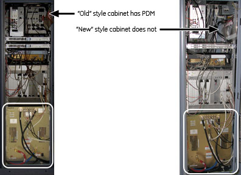
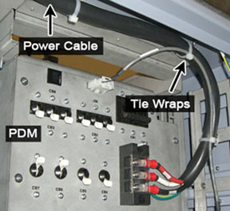
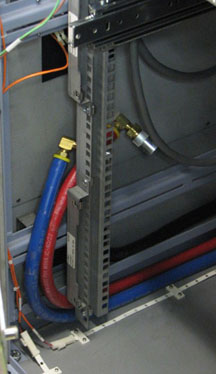
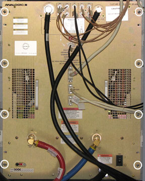
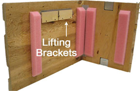
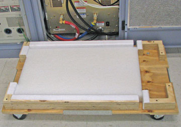
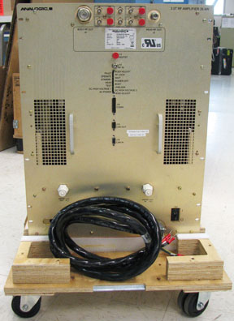
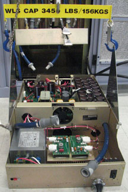
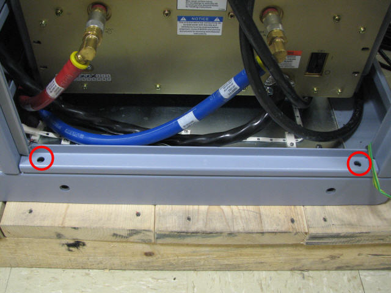

Operating Documentation
Direction 5500113, Rev# 3
Discovery MR750 3.0T Service Methods
Module Version 7.0, Version Date 9/20/10
Operating Documentation |
| Required Persons | Preliminary Reqs | Procedure | Finalization |
|---|---|---|---|
| 1 | 5 mins | 90-120 | 5 mins |
There are two styles of PGR Cabinets. The “old” style contains a Power Distribution Module (PDM) in the upper right-hand corner of the cabinet. The “new” style does not contain a PDM. (Shown in the illustrations below.)
This document contains four procedures (two for each style of cabinet): eXtreme RF Amplifier (XRFD) replacement and eXtreme RF Power Supply (XRFD PS) replacement. Both units are in the PGR cabinet (shown below). The XRFD unit is about 315 lbs. and the XRFD PS is 80 lbs. Each unit weighs enough that the use of a hoist kit is required. This document details the correct way to use a hoist kit to remove the XRFD and XRFD PS units and replace with the field replaceable unit (FRU) safely.
Illustration 1: PGR Cabinet - XRFD and Power Supply

| Item | Qty | Effectivity | Part# | Manufacturer | |
|---|---|---|---|---|---|
| Hoist Service Kit | 1 | - | 5196226 | - | |
| Non-Magnetic Tool Kit (or equivalent) | 1 | - | 5113258 | - | |
| Item | Qty | Effectivity | Part# | Manufacturer |
|---|---|---|---|---|
| Towels | N/A | - | - | - |
| Tie Wraps | 3-5 | - | - | - |
| Item | Qty | Effectivity | Part# | Manufacturer | |
|---|---|---|---|---|---|
| XRFD | 1 | - | 5135844-3 | - | |
| XRFD PS | 1 | - | 5135844-4 | - | |
| ||||
| possible personal injury or equipment damage! | ||||
| the module could fall when using the lift tool. | ||||
| before putting weight on the hoist chain, be sure that the links are aligned properly. this will help keep the chain from binding up, or becoming kinked, which is nearly impossible to correct when the chain is under tension. |
| Condition | Reference | Effectivity |
|---|---|---|
The PGR PDU/Gradient Subsystem must be locked out and tagged out before starting this procedure. | - | - |
Before disconnecting any coolant lines on the front of the XRFD unit, shut down the Power electronics PuMP (PPMP) at the Heat Exchange Cabinet (HEC) . | - | - |
This document contains four procedures. Be certain to follow the instructions appropriate for the component being replaced and the Cabinet style (i.e., with or without PDM):
Power down the host PC.
The power in the cabinet needs to be off. Perform the LOTO for the PGR PDU/Gradient Subsystem before the XRFD or XRFD PS unit is replaced.
Before disconnecting any coolant lines on the front of the XRFD unit, shut down the Power electronics PUMP (PPMP) at the Heat Exchange Cabinet (HEC) by pressing ▲ and F3 simultaneously. Then, switch the PPMP circuit breaker (CB) to OFF.
Before setting up the hoist kit, remove the eXtreme Gradient Power Supply (XPS) J9 connector to properly remove the main lifting beam. (Shown below.)
Illustration 2: Lifting Beam and Connector in PGR Cabinet

Perform the Hoist Service Kit and Lifting Accessories procedure to set up and secure the hoist.
Remove tie wraps that hold the power cable. (Shown below.) The cable goes underneath the XRFD and along the side of the cabinet to the top of the Power Distribution Module (PDM) .
Illustration 3: Tie Wraps on Power Cable

| NOTE: | Prior to the next step, prepare to absorb any leakage from the coolant lines with a towel in hand as the line is disconnected. |
Disconnect the power cable at the terminal, the cables on the front of the XRFD, and disconnect the coolant lines. Carefully move the cables and lines to the side of the cabinet, allowing the surrounding area to be free from any obstruction of movement for when the amplifier will be pulled out. (Shown below.)
Illustration 4: Coolant Lines Placement

Unscrew the eight attachment screws. (Shown below.)
Illustration 5: XRFD Attachment Screws

Using the two front handles, carefully slide out the XRFD unit.
Attach the lifting brackets to both sides of the XRFD. The lifting brackets can be found in the XRFD FRU crate. (Shown below.) The attachment screws are captive screws and remain with the lifting brackets.
Illustration 6: Inside FRU Crate - Lifting Brackets

Hook the winch and spreader bar from the hoist kit to the lifting bracket. Ratchet the winch to tighten the chain. (Shown below.)
| NOTE: | Make sure the hook is seated in the lifting bracket. If not, the weight can shift causing harm to the equipment or the engineer. |
Illustration 7: Lifting Brackets with Seated Hook

With the XRFD unit supported by the hoist kit, unscrew the four screws and remove the slide rails from both sides. (Shown below.)
Illustration 8: XRFD Slide Rails

The FRU is packaged in a wooden crate. For the XRFD, there are four parts to the FRU crate. Remove the top of the wooden crate and turn it on its base. The XRFD being removed can be placed into the top. Roll the top underneath the XRFD. (Shown below.) Lock the wheels so that the container does not move.
Illustration 9: Base of FRU Crate

Ratchet the winch to lower the XRFD into the package.
Remove the hook from the lifting bracket.
Unscrew the lifting brackets from the sides of the XRFD. Roll the removed XRFD to the side.
Remove the center sections of the FRU crate.
Remove the shipping screw from each side of the XRFD FRU. (Shown below.)
Illustration 10: Shipping Screw on XRFD FRU

Bring the FRU to the front of the cabinet. (Shown below.) Attach the slide rails to the FRU.
Illustration 11: XRFD FRU

Attach the lifting brackets to the sides of the new amplifier.
Attach the new XRFD lifting brackets to the winch and spreader bars.
| NOTE: | Make sure the hook is seated in the lifting bracket. If not, the weight can shift causing harm to the equipment or the engineer. |
Ratchet the winch to tighten the chains and begin lifting the unit. Slide out the rail a short amount to gauge how high to lift the new XRFD. The XRFD slide rails and the cabinet slide rails must align for correct insertion.
When the slide rails are aligned, pull the slide rails out a short distance to get each side started. Once both of the slide rails are attached, pull the slide rails on to the FRU until you hear a click. This click is a signal that the unit is docked in the rails. Ensure the XRFD is secure on the rails
Unhook the winch and spreader bars from the lifting brackets. Remove the lifting brackets from the sides of the new XRFD.
| NOTE: | Place the lifting brackets into the XRFD FRU crate. |
Slide the XRFD into the cabinet completely.
Attach the XRFD to the cabinet using the front eight attachment screws (see Illustration 5).
Reconnect the cables and coolant lines to the XRFD.
| NOTE: | Prior to the next step, prepare to absorb any leakage from the coolant lines with a towel in hand as the line is connected. |
Disassemble the hoist kit. Return the main lifting beam to the PGR cabinet. Once the beam is secure, reconnect the XPS J9 connector. Return the support tube to the HEC.
Proceed to Finalization, Step 1.
Power down the host PC.
The power in the cabinet needs to be OFF. Perform the LOTO for the PGR PDU/Gradient Subsystem before the XRFD or XRFD PS unit is replaced.
Before disconnecting any coolant lines on the front of the XRFD unit, shut down the Power electronics PuMP (PPMP) at the Heat Exchange Cabinet (HEC) . Press ▲ F3 simultaneously to stop the pump. Then, switch the PPMP circuit breaker (CB) to OFF.
Before setting up the hoist kit, remove the eXtreme Gradient Power Supply (XPS) J9 connector to properly remove the main lifting beam (see Illustration 2).
Perform the Hoist Service Kit and Lifting Accessories procedure to set up and secure the hoist.
Remove tie wraps that hold the power cable. The cable goes underneath the XRFD and along the side of the cabinet to the top (see Illustration 3).
| NOTE: | Prior to the next step, prepare to absorb any leakage from the coolant lines with a towel in hand as the line is disconnected. |
Disconnect the power cable at the terminal, the cables on the front of the XRFD PS, and disconnect the coolant lines. Carefully move the cables and lines to the side of the cabinet, allowing the surrounding area to be free for when the PS unit will be pulled out (see Illustration 4).
Unscrew the eight large screws that attached the XRFD to the cabinet, the four screws that attach to the manifold, the twenty-two faceplate screws, and the two BNC locking nuts. (Shown below.)
Illustration 12: XRFD - All Screws

Remove the XRFD PS faceplate. Once the faceplate, is pulled away from the unit, conduct the following steps:
Loosen the two front thumbscrews to allow the manifold tray to swing up.
Lift manifold tray and pull out of the way of power supply. The manifold has a spring loaded pin that allows the tray to swivel up and down. (Shown below.)
Illustration 13: Manifold Pin on XRFD PS

Disconnect the two internal coolant lines.
Locate long and thin retaining bracket mounted directly above supply opening, remove screws and remove bracket.
| NOTE: | If the supply will not slide forward, then it will be necessary to extend the XRFD from the cabinet and check that the shipping screws have been removed from each side of the XRFD. |
Remove the two sub-D cables, PSU-1 and PSU-2. (Shown below.)
Illustration 14: Sub-D Cables

Slide out the XRFD PS unit.
Attach the lifting brackets to both sides of the XRFD PS. The lifting brackets can be found in the XRFD PS FRU crate (see Illustration 6). The attachment screws are captive screws and remain with the lifting brackets.
Hook the winch and spreader bar from the hoist kit to the lifting bracket. (Shown below.) Ratchet the winch to tighten the chain.
| NOTE: | Make sure the hook is seated in the lifting bracket. If not, the weight can shift causing harm to the equipment or the engineer. |
Illustration 15: XRFD PS with Hoist Kit

The FRU is packaged in a wooden crate. For the XRFD PS, there are three parts to the FRU crate. Remove the top of the wooden crate and turn it on its base. The XRFD PS being removed can be placed into the top. Roll the top underneath the XRFD PS. Lock the wheels so that the container does not move.
Ratchet the winch to lower the XRFD PS into the package.
Remove the hook from the lifting bracket.
Unscrew the lifting brackets from the sides of the XRFD. Roll the removed XRFD PS to the side.
Remove the center section of the FRU crate.
Remove the shipping cover from the XRFD PS FRU.
Take the shipping cover and attach to the top of the removed XRFD PS FRU.
Bring the FRU to the front of the cabinet and attach the lifting brackets to the sides of the new power supply.
Attach the new XRFD PS lifting brackets to the winch and spreader bars.
| NOTE: | Make sure the hook is seated in the lifting bracket. If not, the weight can shift causing harm to the equipment or the engineer. |
Ratchet the winch to tighten the chains and begin lifting the unit.
Place the XRFD PS into the XRFD.
Unhook the winch and spreader bars from the lifting brackets. Remove the lifting brackets from the sides of the new XRFD PS.
| NOTE: | Place the lifting brackets into the XRFD PS FRU crate. |
Slide the XRFD PS into the XRFD. Once the XRFD PS is completely in the XRFD, conduct the follow steps:
Attach the two sub-D cables.
Attach the upper retaining bracket.
Connect the two quick disconnect lines.
Release the manifold and swing the tray down.
Tighten the two front thumbscrews.
| NOTE: | Prior to the next step, prepare to absorb any leakage from the coolant lines with a towel in hand as the line is connected. |
Attach the XRFD faceplate.
Reconnect the cables and coolant lines to the XRFD. For the power cable, use the tie wraps along the inner edge of the cabinet and along the top so that the cable is safely placed out of the way.
Attach the XRFD to the cabinet using the front eight attachment screws.
Disassemble the hoist kit. Return the main lifting beam to the PGR cabinet. Once the beam is secure, reconnect the XPS J9 connector. Return the support tube to the HEC.
Proceed to Finalization, Step 1.
Power down the host PC.
The power in the cabinet needs to be OFF. Perform LOTO for the PGR PDU/Gradient Subsystem before the XRFD or XRFD PS unit is replaced.
Before disconnecting any coolant lines on the front of the XRFD unit, shut down the Power electronics Pump (PPMP) at the Heat Exchange Cabinet (HEC) by pressing ▲ and F3 simultaneously. Then switch the PPMP circuit breaker to OFF
Before setting up the hoist kit, remove the eXtreme Gradient Power Supply (XPS) J9 connector to properly remove the main lifting beam. (Shown below.)
Illustration 16: Lifting Beam and Connector in PGR Cabinet
Perform the Hoist Service Kit and Lifting Accessories procedure to set up and secure the hoist.
| NOTE: | Prior to the next step, prepare to absorb any leakage from the coolant lines with a towel in hand as the line is disconnected. |
Disconnect the cables on the front of the XRFD, and disconnect the coolant lines. Carefully move the cables and lines to the side of the cabinet, allowing the surrounding area to be free from any obstruction of movement for when the amplifier will be pulled out. (Shown below.)
Illustration 17: Coolant Lines Placement
Remove PGR base plate by unscrewing the two attached screws (shown below).
Illustration 18: PGR Base Plate

Unscrew the eight attachment screws (shown below).
Illustration 19: XRFD Attachment Screws
Using the two front handles, carefully slide out the XRFD unit.
Attach the lifting brackets to both sides of the XRFD. The lifting brackets can be found in the XRFD FRU crate. (Shown below.) The attachment screws are captive screws and remain with the lifting brackets.
Illustration 20: Inside FRU Crate - Lifting Brackets
Hook the winch and spreader bar from the hoist kit to the lifting bracket. Ratchet the winch to tighten the chain. (Shown below.)
| NOTE: | Make sure the hook is seated in the lifting bracket. If not, the weight can shift causing harm to the equipment or engineer. |
Illustration 21: Lifting Brackets with Seated Hook
With the XRFD unit supported by the hoist kit, unscrew the four screws and remove the slide rails from both sides. (Shown below.)
Illustration 22: XRFD Slide Rails
The FRU is packaged in a wooden crate. For the XRFD, there are four parts to the FRU crate. Remove the top of the wooden crate and turn it on its base. The XRFD being removed can be placed into the top. Roll the top underneath the XRFD. (Shown below.) Lock the wheels so that the container does not move.
Illustration 23: Base of FRU Crate
Ratchet the winch to lower the XRFD into the package.
Remove the hook from the lifting bracket.
Roll the RF amp to the side to allow access to the cabinet base.
Disconnect the RF amp power cable from the terminal. (Shown below.)
Illustration 24: RF Amp Terminal Block

Unscrew the lifting brackets from the sides of the XRFD. Roll the removed XRFD to the side.
Remove the center sections of the FRU crate.
Remove the shipping screw from each side of the XRFD FRU. (Shown below.)
Illustration 25: Shipping Screw on XRFD FRU
Bring the FRU to the front of the cabinet. (Shown below.) Attach the power cable to the terminal and attach the slide rails to the FRU.
Illustration 26: XRFD FRU
Attach the lifting brackets to the sides of the new amplifier.
Attach the new XRFD lifting brackets to the winch and spreader bars.
| NOTE: | Make sure the hook is seated in the lifting bracket. If not the weight can shift causing harm to the equipment or the engineer. |
Ratchet the winch to tighten the chains and begin lifting the unit. Slide out the rail a short amount to gauge how high to lift the XRFD. The XRFD slide rails and the cabinet slide rails must align for correct insertion.
When the slide rails are aligned, pull the slide rails out a short distance to get each side started. Once both of the slide rails are attached, pull the slide rails onto the FRU until you hear a click. This click is a signal that the unit is docked in the rails. Ensure the XRFD is secure on the rails.
Unhook the winch and spreader bars from the lifting brackets. Remove the lifting brackets from the sides of the new XRFD.
Place the lifting brackets into the XRFD FRU crate.
Slide the XRFD into the cabinet completely.
Attach the XRFD to the cabinet using the front eight attachment screws (see Illustration 19).
| NOTE: | Prior to the next step, prepare to absorb any leakage from the coolant lines with a towel in hand as the line is connected. |
Reattach PGR base plate using the two attachment screws (see Illustration 18).
Reconnect the remaining cables and coolant lines to the XRFD.
Disassemble the hoist kit. Return the main lifting beam to the PGR cabinet. Once the beam is secure, reconnect the XPS J9 connector. Return the support tube to the HEC.
Proceed to Finalization, Step 1.
Power down the host PC.
The power in the cabinet needs to be OFF. Perform LOTO for the PGR PDU/Gradient Subsystembefore the XRFD or XRFD PS unit is replaced.
Before disconnecting any coolant lines on the front of the XRFD unit, shut down the Power electronics Pump at the Heat Exchange Cabinet. Press ▲ and F3 simultaneously to stop the pump. Then switch the PPMP circuit breaker to OFF.
Before setting up the hoist kit, remove the eXtreme Gradient Power Supply J9 connector to properly remove the main lifting beam (see Illustration 16).
Perform the Hoist Service Kit and Lifting Accessories procedure to set up and secure the hoist.
| NOTE: | Prior to the next step, prepare to absorb any leakage from the coolant lines with a towel in hand as the line is disconnected. |
Disconnect the cables on the front of the XRFD PS, and disconnect the coolant lines. Carefully move the cables and lines to the side of the cabinet, allowing the surrounding area to be free for when the PS unit will be pulled out (see Illustration 17).
Unscrew the eight attachment screws. (Shown below.)
Illustration 27: XRFD Attachment Screws
Using the two front handles, carefully slide out the XRFD unit.
Attach the lifting brackets to both sides of the XRFD. The lifting brackets can be found in the XRFD FRU crate. (Shown below.) The attachment screws are captive and remain with the lifting brackets.
Illustration 28: Inside FRU Crate - Lifting Brackets
Hook the winch and spreader bar from the hoist kit to the lifting bracket. Ratchet the winch to tighten the chain. (Shown below.)
| NOTE: | Make sure the hook is seated in the lifting bracket. If not, the weight can shift, causing harm to the equipment or engineer. |
Illustration 29: Lifting Brackets with Seated Hook
With the XRFD unit supported by the hoist kit, remove the RF Amp from the slide rails.
Ratchet the winch to lower the XRFD onto the floor, making sure to allow space to disconnect the power cable.
Disconnect the RF amp power cable from the terminal (shown below) and bring to the front of the RF amp.
Illustration 30: RF Amp Terminal Block
Ratchet the winch to tighten the chains and begin lifting the unit. Slide out the rail a short amount to gauge how high to lift the XRFD. The XRFD slide rails and the cabinet slide rails must align for correct insertion.
When the slide rails are aligned, pull the slide rails out a short distance to get each side started. Once both of the slide rails are attached, pull the slide rails onto the FRU until you hear a click. This click is a signal that the unit is docked in the rails. Ensure the XRFD is secure on the rails.
Unhook the winch and spreader bars from the lifting brackets. Remove the lifting brackets from the sides of the XRFD.
Slide the XRFD into the cabinet completely.
Unscrew the four screws that attach to the manifold, the twenty-two faceplate screws, and the two BNC locking nuts. (Shown below.)
Illustration 31: XRFD - All Screws
Remove the XRFD PS faceplate. Once the faceplate, is pulled away from the unit, conduct the following steps:
Loosen the two front thumbscrews to allow the manifold tray to swing up.
Lift manifold tray and pull out of the way of power supply. The manifold has a spring loaded pin that allows the tray to swivel up and down. (Shown below.)
Illustration 32: Manifold Pin on XRFD PS
Disconnect the two internal coolant lines.
Locate long and thin retaining bracket mounted directly above supply opening, remove screws and remove bracket.
| NOTE: | If the supply will not slide forward, then it will be necessary to extend the XRFD from the cabinet and check that the shipping screws have been removed from each side of the XRFD. |
Remove the two sub-D cables, PSU-1 and PSU-2. (Shown below.)
Illustration 33: Sub-D Cables
Slide out the XRFD PS unit.
Attach the lifting brackets to both sides of the XRFD PS. The attachment screws are captive screws and remain with the lifting brackets.
Hook the winch and spreader bar from the hoist kit to the lifting bracket. (Shown below.) Ratchet the winch to tighten the chain.
| NOTE: | Make sure the hook is seated in the lifting bracket. If not, the weight can shift causing harm to the equipment or the engineer. |
Illustration 34: XRFD PS with Hoist Kit
The FRU is packaged in a wooden crate. For the XRFD PS, there are three parts to the FRU crate. Remove the top of the wooden crate and turn it on its base. The XRFD PS being removed can be placed into the top. Roll the top underneath the XRFD PS. Lock the wheels so that the container does not move.
Ratchet the winch to lower the XRFD PS into the package.
Remove the hook from the lifting bracket.
Unscrew the lifting brackets from the sides of the XRFD. Roll the removed XRFD PS to the side.
Remove the center section of the FRU crate.
Remove the shipping cover from the XRFD PS FRU.
Take the shipping cover and attach to the top of the removed XRFD PS FRU.
Bring the FRU to the front of the cabinet and attach the lifting brackets to the sides of the new power supply.
Attach the new XRFD PS lifting brackets to the winch and spreader bars.
| NOTE: | Make sure the hook is seated in the lifting bracket. If not, the weight can shift causing harm to the equipment or the engineer. |
Ratchet the winch to tighten the chains and begin lifting the unit.
Place the XRFD PS into the XRFD.
Unhook the winch and spreader bars from the lifting brackets. Remove the lifting brackets from the sides of the new XRFD PS.
Slide the XRFD PS into the XRFD. Once the XRFD PS is completely in the XRFD, conduct the follow steps:
Attach the two sub-D cables.
Attach the upper retaining bracket.
Connect the two quick disconnect lines.
Release the manifold and swing the tray down.
Tighten the two front thumbscrews.
Attach the XRFD faceplate.
Using the two front handles, carefully slide out the XRFD unit.
Attach the lifting brackets to both sides of the XRFD. The attachment screws are captive and remain with the lifting brackets.
Hook the winch and spreader bar from the hoist kit to the lifting bracket. Ratchet the winch to tighten the chain. (Shown below.)
| NOTE: | Make sure the hook is seated in the lifting bracket. If not, the weight can shift, causing harm to the equipment or the engineer. |
Illustration 35:
With the XRFD unit supported by the hoist kit, remove the RF amp from the slide rails.
Ratchet the winch to lower the XRFD onto the floor, making sure to allow space to attach the power cable.
Attach the RF Amp power cable to the terminal block. (Shown below.)
Illustration 36: RF Amp Terminal Block
Ratchet the winch to tighten the chains and begin lifting the unit. Slide out the rail a short amount to gauge how high to lift the new XRFD. The XRFD slide rails and the cabinet slide rails must align for correct insertion.
When the slide rails are aligned, pull the slide rails out a short distance to get each side started. Once both of the slide rails are attached, pull the slide rails on to the FRU until you hear a click. This click is a signal that the unit is docked in the rails. Ensure the XRFD is secure on the rails.
Unhook the winch and spreader bars from the lifting brackets. Remove the lifting brackets from the sides of the new XRFD.
| NOTE: | Place the lifting brackets into the XRFD FRU crate. |
Slide the XRFD into the cabinet completely.
Attach the XRFD to the cabinet using the front eight attachment screws.
| NOTE: | Prior to the next step, prepare to absorb any leakage from the coolant lines with a towel in hand as the line is connected. |
Reconnect the cables and coolant lines to the XRFD.
Attach the XRFD to the cabinet using the front eight attachment screws.
Disassemble the hoist kit. Return the main lifting beam to the PGR cabinet. Once the beam is secure, reconnect the XPS J9 connector. Return the support tube to the HEC.
Proceed to Finalization, Step 1.
Restore the power using the LOTO for the PGR PDU/Gradient Subsystem.
Power up the host PC.
Turn on the PPMP CB at the HEC. Start the pump by pressing ▲ and F3 simultaneously.
If the complete XRFD was replaced, calibrate the XRFD.
| NOTE: | XRFD calibration is not necessary if only the XRFD PS is replaced. |
Remove coolant from the XRFD unit using the manual coolant removal tool (see Coolant Draining).
After attaching the center sections of the FRU package to the removed FRU unit base, attach the top of the FRU crate to prepare the FRU for return.
| NOTE: | The XRFD has two center sections while the XRFD PS only has one center section. |